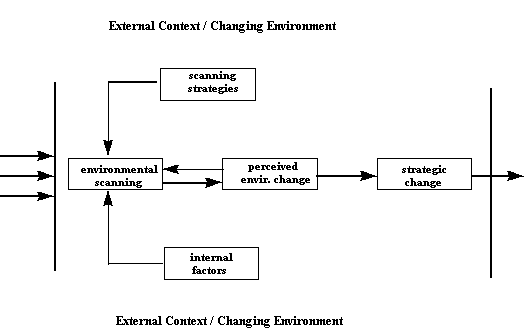

Information Research, Vol. 2 No. 4, April 1997


Information Research, Vol. 2 No. 4, April 1997 | ||||
|
|
|||
| Zita Correia | and | T.D. Wilson |
| Centre for Technical Information for Industry National Institute for Engineering and Industrial Technology Lisbon, Portugal | Department of Information Studies University of Sheffield Sheffield, U.K. |
This paper summarizes the principal findings of research that sought to provide a comprehensive understanding of the environmental scanning process. The methodology used was of major importance in obtaining data that are grounded largely in the personal experience of managers, but also in documentary evidence and in direct observation by the researcher. The purpose of the study was to investigate how managers in the Portuguese chemical industry scan their environment for information, what are the contextual factors that affect this activity, and also how managers' perceptions of environmental change affect the strategic change they implement.
In the context of this research, the case study was considered
appropriate for providing a holistic approach to the study of
environmental scanning in industrial organizations operating in
the chemical industry. In creating the case study, several types
of data and information were collected, including general data
about the industry and specific information about the companies
that agreed to participate.
The data about the companies included:
All this information was of great importance to contextualize
and illuminate the core data regarding the environmental scanning
phenomenon in the companies analyzed. Not all cases, however,
provided equally rich frameworks.
Strauss (1987) emphasizes the usefulness of the case study approach
when used with grounded theory. Grounded theory seeks to generate
theoretical statements and, ultimately, complex theories based
on empirical evidence, although it can be used in different ways
and reach various degrees of complexity. The research design
framework adopted in this study can be described as a multiple
case study, composed according to the theory building structure,
as described by Yin (1989), i.e., where the sequence of
chapters follow a theory-building logic, and using the grounded
theory method of qualitative data analysis.
The sample used in this study did not obey the principles of statistical
sampling, but the principles of maximum variation sampling,
as defined by Patton (1990) and those of theoretical sampling,
as defined by Strauss and Corbin (1990), i.e., sampling
on the basis of concepts that have proven theoretical relevance
to the evolving theory. Our sample incorporated nineteen companies:
five small companies (with more than 10 and less than 99 workers),
ten medium-size companies (with up to 399 workers) and four large
companies (with more than 400 workers). This classification was
adapted from that used by IAPMEI (Institute for the Support of
Small and Medium-size Enterprises and the Investment) and reflects
the characteristics of Portuguese industry, where very small (up
to 10 workers), small and medium-size companies make up more than
90% of the total number of companies established in the country.
The main tool used for collecting the core data for this research
was the semi-structured interview, a tool flexible enough to favouring
adaptation to each context, organization and individual, and also
to pursuing unexpected paths and cues suggested by the theoretical
sensitivity (Glaser & Strauss,1967) developed by the researcher throughout
the research process.
Forty seven interviews were carried out, although seven of them
- the so-called "complementary interviews" - did not
account for statistical purposes. These interviewees were not
questioned about the issues approached in the interview schedule,
but about other related issues that needed to be clarified; Table
1 details the job titles of all the interviewees, as well as the
number of interviewees by job title.
Observation played a minor, but non-negligible role. Visits to
the premises, including the factory plants in some cases, meals
in the canteens of some of the organizations, attention paid to
the way-of-doing-things in the several companies - how visitors
were announced, how meetings were scheduled and cancelled, absence
or frequency and type of interruptions in the course of the interviews,
degree of formality or informality in interpersonal relations
- contributed to consolidate impressions or confirm information
based on documentary evidence or on the interviews.
The information that emerged out of the data provides an empirical
basis for the articulation of a grounded theory of environmental
scanning. The articulation of the theory implies the identification
and description of a set of categories and relationships, which
explain a significant part of the phenomenon under study. Those
categories and relationships must be clearly defined and easily
measurable, and the theory itself should be meaningful for both
organizational theorists and information scientists.
| JOB TITLES | ||
| Managing Director * | ||
| Marketing & Commercial Director ** | ||
| Deputy-Director *** | ||
| Financial Director | ||
| R & D Director | ||
| Technical Director | ||
| Planning Director | ||
| Planning Officer | ||
| Information Officer | ||
| Computer Officer | ||
| Total |
Table 1 - Number, N, Of Interviewees By Job Titles
(* Refers to top managers performing the roles of chief executives,
general directors or managing partners.
** These jobs were grouped
together because there was an overlapping of functions in many
cases.
*** These job titles correspond, in one of the cases,
to the function of planning director and, in the other case, to
a commercially-oriented responsibility. The brackets denote complementary
interviews that were not included in the statistics)
The grounded theory proposed comprises three main components:
the categories (the core category and the subsidiary
categories), the principal relationships
among them, and the contextual factors that
shape the categories and relationships. From an internal perspective,
these factors include corporate history and culture. From an
external perspective, these contextual factors include the overall
economic, social, cultural and political conditions that characerize
modern Portugal and shape, at least to a certain extent, the organizations
operating in that reality.
The model of organization implied by the theory is that of an
open system. The components that make up the grounded theory are
shown in Figure 1.
The core category identified was that of environmental
scanning, to which a set of subsidiary categories was
related. Environmental scanning refers to the exposure to and
acquisition of "information about events and relationships
in a company's outside environment, the knowledge of which would
assist top-management in its task of charting the company's future
course of action." (Aguilar, 1967: 1). This interrelated
set of categories contributes to understanding how contextual
factors - external and internal to the organization, influence
the scanning activity, and also how perceived environmental
change affects strategic change. The task of explaining
variance among companies resides with a few key relationships
among those categories.

External factors perceived as causing change in the environment
were identified as pertaining to two main categories: the regulatory
framework and the business structure. The changes
of a regulatory nature were linked to joining the EC and to government
intervention, while the changes of a business nature
were linked to the trend for concentration in the chemical industry
and the crisis of client industries.
The analysis of the data regarding managers' perceptipons of environmental
change, showed that the impact of joining the EC was evaluated
mainly in terms of the changes in the regulatory framework, bringing
in new rules and procedures to follow, such as regulations
concerning the registration of drugs, the adoption of the patent
regime in force in Europe and the demand for higher standards
regarding product quality. It was also evaluated in terms of
the progressive elimination of customs tariffs and its consequences
upon the fragile competitiveness of the national companies, and
the fear that customs barriers would be replaced by technical
barriers. The growth of the market was a positive issue associated
with joining the EC.
The government was accused of excessive intervention in the regulation
of the market, especially in the health sector, by approving or
rejecting the production of new medicines and by establishing
prices of the medicines; the policy of high interest rates practiced
by the banking system was another negative issue, which was blamed
upon the government, as most of the banks were nationalized when
the field-work was carried out and high interest rates were in
fact part of the government policy to keep inflation down. The
government was also accused of failing to defend the national
interests within the EC and of the mismanagement of development
programmes such as PEDIP (Strategic Programme for the Dynamization
and Modernization of the Portuguese Industry).
Changes in the business structure were described as multifold,
due to the acquisitions and mergers taking place, and also
to the disappearance of smaller companies that sank under the
pressure of competition, as a result of the trend for concentration
that prevails in the chemical industries at large, especially
in the pharmaceutical and cosmetics sub-sectors, and also in the
segments of resin-derived products and synthetic fibre products.
An important factor of instability was said to be the crisis
of some of the client industries, such as the shoe industry
and the textile industry. Factors of a cultural nature were invoked
to explain the reticence of the Portuguese entrepreneurs to engage
in strategic alliances.
The assessment of the environmental attributes showed that the
environment had become extremely hostile and rather complex, even
though turbulence was thought to stay relatively low. The comparative
analysis of results regarding environmental change, obtained through
the assessment of environmental attributes and through the analysis
of perceptions of environmental change, evidenced compatible results.
On the other hand, the advent of the Single Market was seen as
inevitable and was faced predominantly with a moderate degree
of optimism, as it was widely believed that the worst had
passed, meaning that the adaptation process to the Common Market
had been hard enough and that something positive could still be
expected from the Single Market, like keeping market shares or
conquering a niche market or realizing a successful alliance.
Plans of internationalization did not go further than Spain in
most of the cases. The peripheral position of Portugal in Europe
was seen as a hindrance for penetration in other regions as well
as a protection against competitors from central Europe, especially
for industries producing low-value-added products with high costs
of transportation.
More than any other factor, the changeability of the environment
proved to be determinant in the rejection of tight planning schemes,
while the size of the company influences the adoption of planning
(larger companies tend to engage in planning) but other factors
interfere with that tendency, such as the form of the organization
and the management style or the dominant culture. There emerged
no evidence that industrial segments or sub-sectors might influence
the adoption of planning as a management tool. On the other hand,
planning offices are rare and their main role is to collect the
hard data needed to support top managers' decision making.
Strategic change in the companies analyzed revolved mainly around
increasing product quality, which involved in some cases the improvement
of the conditions of production and was associated, in specific
cases of highly pollutant industries, with measures of environment
protection. Other important changes of strategic nature were
internationalization and diversification, pursued by dynamic companies
enjoying a steady growth trend. Growth through acquisitions was
pursued by companies targeting internationalization, and strategic
alliances were embraced mainly by companies oriented to the internal
market, needing to secure a position threatened by strong competitors.
Specialization was adopted by companies with little scope for
growth.
Increasing product quality was a generalized target. However,
some companies made clear that they had always pursued quality,
while others admitted that they had to improve the quality of
their products and the conditions of production in order to satisfy
EC regulations. This concern was particularly acute among the
companies of the plastics sub-sector and the large manufacturers
in declining industries, such as the chlorine producer and the
synthetic fibre manufacturer. In this last case, fear was expressed
that technical barriers would replace customs barriers. The companies
that engaged in improving product quality as part of an adaptive
process to cope with EC regulations denote, generally speaking,
poor operating conditions to face the Single Market, and present
a typical reactive behaviour.
The companies that opted to specialize were in the paints and
in the pharmaceutical sub-sectors, where multi-national companies
have dominated for decades, hence the need to seek product and
market niches not covered by the giant corporations. An option
made in these conditions may be regarded as an adaptive behaviour,
but is not necessarily a reactive behaviour. Growth, diversification
and internationalization involve complex, risky and slow processes
and are, therefore, more clearly associated with proactive behaviours.
Ansoff (1987) remarks that acquisitions and mergers are major
instruments of strategic change and that internationalization
and domestic diversification are alternative routes for expanding
a company's portfolio. Only three of the companies studied engaged
in these actions: a pharmaceutical company which, when the study
was carried out, ranked among the top ten companies operating
in this country and in this sub-sector; a paints company ranking
among the 300 major companies operating in Portugal in 1989, independently
of sector; and a plastics company that has recorded a fast and
steady growth throughout the last decade.
Internal factors influencing the scanning activity were identified
as being of an individual nature - information conciousness and
individual exposure to information - and of an organizational
nature - outwardness and information climate.
Information conciousness was assessed through the attitude of
top managers towards environmental scanning and through the communication
pattern established among managers within each organization.
All the interviewees agreed about the vital role of information
in business. Top managers of large and medium-size companies
operating in different sub-sectors described their role, as far
as environmental scanning is concerned, as a mix of personal monitoring
and dissemination of information among direct collaborators.
A significant difference was detected between managers of larger
companies and managers of smaller companies. In larger companies,
managers tend to minimize their role as monitors and emphasize
their role as disseminators; dissemination of information becomes
an important issue in larger organizations, where more complex
structures and functional diversification are dominant features.
On the other hand, managers of smaller companies assume environmental
scanning as a personal responsibility and attribute great importance
to that activity, while the dissemination factor is irrelevant,
because in most of the cases there is nobody else to pass the
information to.
Communication is generally intense between the top manager and
the functional directors, and among functional directors. Communication
among managers is made up of a mix of oral information and written
information; the nature of this mix and the reasons that determine
the choice of either of the forms of communication was not entirely
clarified. However, some evidence associates the choice of oral
communication with the generic scope of the information or its
potential for starting action. Chief executives tend to use
oral communication more than functional directors, while these
apparently use both forms, without favouring clearly one or the
other a priori. Sometimes both forms are used to convey
the same information, the oral form being used for the first approach,
followed by a memo or a report.
The information climate was assessed through the information infrastructure
implemented, i.e., the processes, technologies and people
used in information acquisition and handling. Most of the pharmaceutical
companies had rich, centralized collections of scientific and
technical information, managed by information professionals with
different backgrounds, offered access to international on-line
systems and provided selective dissemination of information and
loan services. However, the other companies provided a consistent
picture, characterized by loose, small collections made up mainly
of specialized journals, market reports and product literature,
lack of skilled staff to manage information, and the main service
provided was the circulation of journals. This picture was shared
by all the remaining companies, independently of sub-sector or
size.
The pervasiveness of information was pointed out as one of the
reasons why it is so difficult to account for the costs involved
in environmental scanning, as it is always associated with the
performance of specific roles. The data collected point to an
average of 50% of staff involved in information handling in the
medium to large pharmaceutical companies. Smaller companies have
few resources to invest and different needs as well; an average
of 9% of staff was found to be involved in information handling
in smaller companies.
The outwardness of the organizations was assessed through their
links with R&D organizations, the collaboration with regulatory
agencies and participation in development programmes. Apart from
two multinational pharmaceutical companies that developed fundamental
research, the remaining companies either developed applied research,
independently or in association with research organizations, or
did not develop research at all. This was the case of large companies
operating in declining industries and small companies in the plastics
sub-sector, which used external laboratories for quality control
only.
Large and medium size companies enjoying relative economic health
engage in collaborative actions with a view to influencing legislative
and other regulatory initiatives, usually through their sectoral
associations, sometimes regional or international bodies. This
collaboration, however, is generally passive, i.e., companies
tend to act only under request. Companies of the same size going
through a crisis tend to turn inwards for reorganization. Smaller
companies, on the other hand, usually lack the resources needed
to be able to provide collaboration to external bodies.
Most of the successful applications submitted to development programmes,
with relevance for PEDIP, were directed to productive investments
and training, this last item being funded either through PEDIP
or through the European Social Fund.
Managers' exposure to information was assessed through the development
of their information networks. Training opportunities provided
by the organization to other ranks of staff was used as an additional
way of assessing the exposure to information throughout the organization.
The performance of the liaison role by chief executives and other
managers consists largely in the setting up of their external
information system. Access to important sources of information
is reached through the appointment to key places within the sectoral
and industrial associations and sometimes to international associations,
where managers' exposure to information is taken to a full extent.
Exposure to information emerged in this study as the individual
face of the broader phenomenon of organizational outwardness,
and proved to be difficult to detach and analyze on its own.
This was determined, to a great extent, by the decision to target
the organization as the unit of analysis.
Organizational culture emerged as an important factor in the analysis
of information issues within organizations. The data available
indicate that the type of information culture that prevails in
pharmaceutical companies is a formal information culture.
Two other companies in two different sub-sectors were identified
as having an oral culture and an information concious culture,
respectively.
The segmentation of the external information environment used
in our study was largely based on that used by Goshal (1985),
including competition (information concerning competitors, including
their actions, decisions, strategies, plans, weak and strong points),
market (all the information concerning markets, except competitor
issues, clients' needs and preferences, distribution channels,
reaction to promotion, market potential, etc.), technology (all
the information concerning present and potential product and process
technologies), resources (information on financial, labour and
raw material markets that affect goods, resources and services
needed by the firm in order to carry out its operations), regulatory
(all the information concerning regulations that can affect business
operations, including information about regulatory agencies and
personnel) and global issues (all the information regarding social,
cultural, demographic, economic and political trends).
Managers consider competitor information very important, very
difficult to obtain and use it very frequently; market information
is also considered very important, it is used very frequently,
and is found to be relatively difficult to obtain. Information
on technology is considered relatively important, is used relatively
frequently, and it is considered difficult to obtain. Information
on resources is considered relatively important, is used relatively
frequently, and it is not so difficult to obtain. Opinions regarding
regulatory information were divided between not important and
relatively important, easy or relatively difficult to find, and
between rarely used and used with relative frequency. Global
information is considered not important, easy to find, and it
is used seldom.
Factors that affect the choice of internal or external sources
are the size of the company and the complexity of the organizational
structure. Chief executives of larger companies tend to make
use of the company's information infrastructure in order to obtain
the external information that they do not obtain by themselves,
since, in a complex organization structure, the division of tasks
is clear and the chief executive's time is precious. In smaller
companies, entrepreneurs often perform other roles, such as the
role of marketing and commercial director, or financial and administrative
director. If management is shared by two co-managers, each one
assumes one of those two major areas, usually according to their
personal tastes or previous experience, or university background.
As a result, managers themselves have to scan their environment
and establish priviledged contacts with their main external sources.
Another factor that influences the preference given by managers
to internal or external sources is the predominance of certain
types of information culture, or the inexistence of an information
culture. The lack of an information culture, and the subsequent
small investment in the information infrastructure, may lead to
the establishment of direct contacts with external information
sources, even when the company is large and has established complex
and formal internal procedures for communication, planning and
decision making; the existence of an oral culture may have similar
results. But when a formal information culture dominates, managers
- especially top managers - tend to use internal sources, and
when an information-conscious culture exists, there is a tendency
to implement and use advanced information systems to obtain information.
The functional role played also influences the choice of internal
or external sources. Marketing or commercial directors, R&D
directors and some managing directors (those directing small companies
or those directing large companies where an oral culture dominates
or where no information culture exists) give usually preference
to external sources. On the other hand, financial and administrative
directors or other senior staff such as planning directors, whose
roles are mostly inward oriented, or managers directing medium-size
or large companies where a formal information culture exists,
tend to give more importance to internal sources.
Internal sources are viewed by some managers as filters and by
others as contaminators of the information provided by external
sources. The concept of internal sources as filters has a positive
connotation, since internal sources are attributed an important
role, that of selecting relevant information, thus saving the
chief executive 's time. On the other hand, the concept of internal
sources as contaminators of the information provided by external
sources has a negative connotation and was assumed, significantly,
by managers from companies where no information culture exists,
or where an oral culture dominates.
Some of the respondents stressed the complementarity between impersonal
and personal sources, impersonal sources being looked
at as conveyors of generic information, meaning information that
is in the public domain, or about factors which, in principle,
evolve gradually, and also as means to feed an attitude of general
awareness. While personal sources would convey specific information,
meaning more or less secret information that can not be found
on printed sources and is transmitted only by word-of-mouth, or
specific and detailed information that can help in clarifying
ideas or implementing specific strategies.
Most of the managers interviewed manifested clear preference for
personal sources. The arguments provided to justify this preference
range from the greater reliability of the personal sources, to
their role as the shortest way to the information needed or the
last resource to get information that they could not find
anywhere else. Finally, some comments seem to point to the role
of impersonal sources as a route to personal sources, which emerge
as the desirable target.
Some managers established a relationship between the attitude
of looking deliberately for information with the use of
formal sources and the unexpected acquisition of information
with the use of informal sources. Other managers established
an important association between the notion of need - information
need - and the starting of deliberate action to get the information
needed.
Perceived environmental change refers to the alteration
in the pattern of events and relationships occurring in the company's
outside environment, as perceived by managers, which may lead
the company to adjust to the new conditions. Strategic change
refers to the alteration of the company's course of action in
order to create new conditions or adapt to new conditions. The
perceived environmental change-strategic change connection translates
the decisive role of top managers' perceptions of environmental
change upon their decisions to change their companies' course
of action.
Information consciousness means the value attributed to
information, and it is a construct that emerged within the individual
sphere but in the cross-section of the individual behaviour and
the organizational way-of-doing things. Information climate
emerged within the organizational sphere as a set of conditions
that determine access to and use of information. The information
conciousness-information climate connection translates the strong
influence detected between the top manager's attitude towards
information-related activities and the type of information climate
established in each company.
Outwardness means the openness of a company to the outside
and permeability to external influences and is rooted in the concept
of organizations as open systems. Exposure to
information refers to the frequency of opportunities
of contact with well-informed people and information-rich contexts.
It is rooted in the concept of boundary spanning personnel, as
people establishing the connection between their organizations
and the environment, as well as in the concept of gatekeeping
and information stars, and emerged as the individual face of the
organizational phenomenon of outwardness. The outwardness-exposure
to information connection translates the determinant
weight of the organizational capacity to relate to the environment,
upon the degree of exposure to information of individuals.
Aguilar, F.J. (1967) Scanning the Business Environment.
New York: McMillan.
Ansoff, H.I. (1987) Corporate Strategy. Revised edition.
London: Penguin.
Glaser, B. & Strauss, A. (1967) The Discovery of Grounded
Theory: Strategies of Qualitative Research. London:Weidenfeld
& Nicolson.
Goshal, S. (1985) Environmental Scanning: an Individual and
Organizational Level Analysis. PhD Thesis. Cambridge, MA:
Massachussets Institute of Technology.
Patton, M.Q. (1990) Qualitative Evaluation and Research Methods.
2nd. Edition. London: Sage.
Strauss, A. & Corbin, J, (1990). Basics of Qualitative
Research: Grounded Theory Procedures and Techniques. London:
Sage.
Strauss, A. (1987) Qualitative Analysis For Social Scientists.
Cambridge: Cambridge University Press.
Yin, R. (1989) Case Study Research: Design and Methods.
Revised edition. London: Sage. (Applied Social Research Methods
Series, 5).
How to cite this paper:
Correia, Zita & Wilson, T.D. (1997) "Scanning the business environment for information: a grounded theory approach<" Information Research, 2(4) Available at: http://informationr.net/ir/2-4/paper21.html
© the authors, 1997, 2000 Updated: 3rd April 2000
Contents |
|
Home |